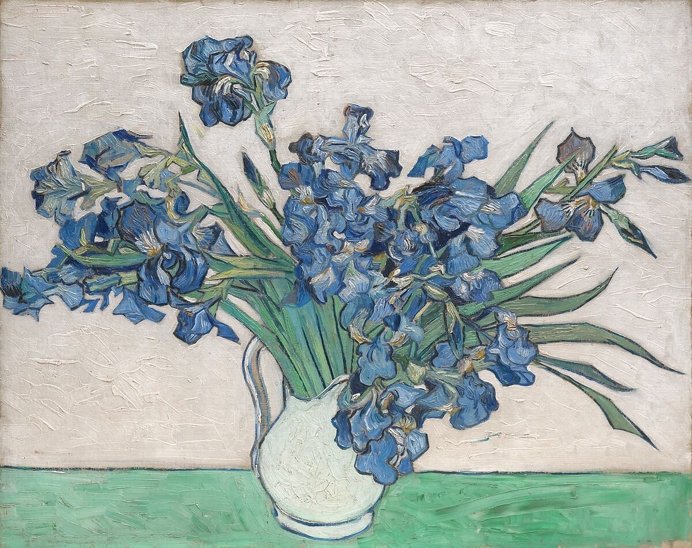

Facts
-
Favorite Sport:
- To watch - Baseball
- To play - Volleyball
-
Favorite Artist:
-
Musical - Electric Light Orchestra
Favorite Song: Do Ya
-
Physical Art - Vincent Van Gogh
Favorite Paintings:
Irises Starry Night

Hobbies
- Gaming - Mainly shooter looters like the Borderlands games or exploration games like No Man's Sky, Skyrim, or Satisfactory
- Reading - I like high fantasy like The Lord of the Rings by JRR Tolkien and historical fiction like the Parasol Protectorate by Gail Cariger and The Imortal Decendannts by April White
- Skating - I prefer to be on inline roller blades but I do know how to skateboard
- Crafting - Sewing, knitting, painting; so long as I have a pattern I am off to the races
-
Musical - Electric Light Orchestra